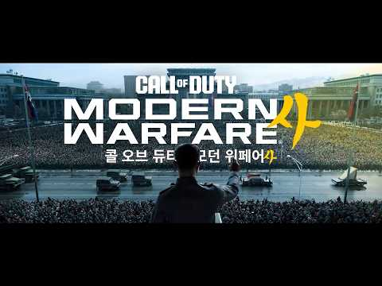
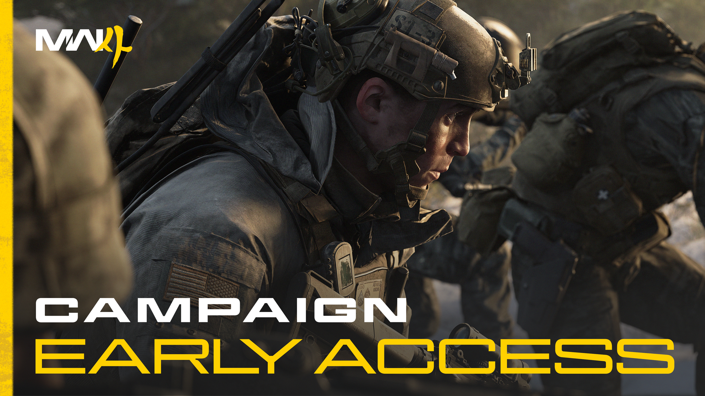
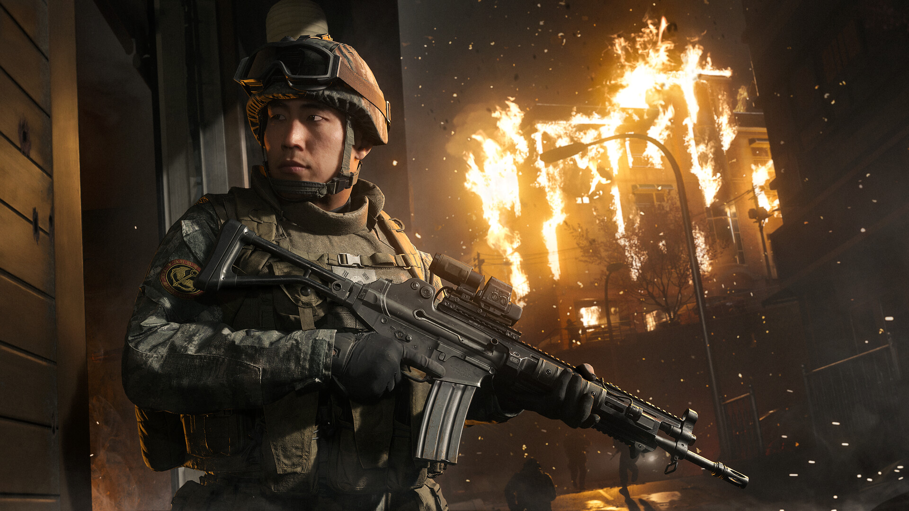

콜 오브 듀티 모던 워페어 4 사기 전 체크리스트 10월 23일 출시 가격 에디션 PC 사양 정리
안녕하세요, 영원한도시입니다. 6월 2일에 모던 워페어 4 한반도 배경 총정리 글을 올렸는데요. 출시를 보름 남짓 앞둔 지금 그 뒤로 바뀐 게 한꺼번에 쏟아져서(?) 이번엔 스토리 얘기는 싹 빼고 사기 전에 뭘 봐야 하나만 추렸습니다. 마침 10월 6일 낮 12시에 한국닌텐도 공식 채널로 캠페인 트레일러까지 올라왔고요.

한국닌텐도 공식 채널 캠페인 트레일러 썸네일(154초)
이미지 출처: 한국닌텐도 공식 YouTube 채널(영상 썸네일)
기준부터 말씀드리면, 가격과 구성은 10월 6일 기준 Steam·PS 한국 스토어와 공식 블로그에서 확인한 값입니다. 스토어에서 읽지 못한 값(Xbox·스위치2·Battle.net 가격 등)은 숫자를 지어 쓰지 않고 '확인 필요'로 남겨 뒀어요. 결제 직전에 한 번 더 열어 보세요.
1. 날짜와 가격 한 표 결론
모던 워페어 4는 2026년 10월 23일 금요일에 PS5·Xbox Series X|S·PC·닌텐도 스위치2로 같이 나오는데요, 한국 가격은 Steam 기준 스탠다드 80,000원·볼트 121,900원입니다.
| 구분 | 내용 |
|---|---|
| 출시일 | 10월 23일(금), 전 플랫폼 동일 |
| PC 스탠다드(Steam) | 80,000원 |
| PS5 스탠다드(PS 한국 스토어) | 88,900원 |
| 볼트 에디션(Steam·PS) | 121,900원 |
| 볼트 충성 고객 할인 | 109,710원(디지털 예약 한정, 10월 23일까지) |
| 캠페인 얼리 액세스 | 10월 16일(금, PT) 시작, 한국 날짜는 17일 전후(디지털 예약·사전구매자) |
앞에서 본 썸네일에는 제목 로고가 걸려 있는데요. 영상은 한국닌텐도 공식 채널에 10월 6일 낮 12시(한국 시각)에 올라온 '캠페인 트레일러'이고 길이는 154초예요. 설명란에는 "한반도에서 지구 끝에 이르기까지, 태스크 포스 141은 국경 없는 전쟁에 직면합니다. 장대한 결말을 목격하십시오."라고 적혀 있습니다. 업로더가 닌텐도 쪽이라 눈에 띄긴 하는데, 이 영상이 스위치2 화면인지는 설명란만으로는 알 수 없어서 거기까지는 말씀드리지 않을게요.
2. 6월 이후 달라진 5가지
6월 2일 글 이후 달라진 건 스위치2 동시 출시, PC 사양 공개, 오픈 베타 종료, 캠페인 얼리 액세스 신설, 한국 가격 재확인의 5가지인데요, 이 가운데 가격은 숫자가 그대로입니다.
- 스위치2 : 주인장이 6월 글에 '추후 출시'라고 적었던 부분인데요, 공식 블로그를 보니 10월 23일 다른 플랫폼과 같은 날 출시로 정리됐더라고요.
- PC 사양 : 6월엔 미공개였던 최소·권장 사양이 10월 1일 공식 지원 문서로 올라왔어요(7번에서 표로 정리합니다).
- 오픈 베타 : 8월 29일 새벽 2시부터 9월 2일 새벽 2시(한국 시각)까지 진행돼 이미 끝났고, 사전구매 혜택이던 베타 얼리 액세스도 지나간 혜택입니다.
- 캠페인 얼리 액세스 : 디지털 예약자가 출시 일주일 전쯤부터 캠페인을 먼저 하는 일정이 새로 잡혔습니다.
- 한국 가격 : PC 80,000원·PS5(PS 한국 스토어) 88,900원·볼트 121,900원으로 6월과 같고, Xbox는 아직 못 읽었습니다.
개인적으로 제일 큰 변화는 스위치2 동시 출시라고 봅니다. 6월에는 플랫폼 표에서 따로 빼 놨던 칸이 이제 다른 칸과 같은 줄에 서게 됐거든요.
3. 출시일과 얼리 액세스 날짜 체크
출시일은 10월 23일 금요일인데요, PS 한국 스토어 표기로는 한국 시각 0시부터이고, 캠페인 얼리 액세스는 미국 태평양 시간(PT) 10월 16일 금요일 시작에 한국 날짜로는 17일 전후입니다.
| 일정 | 날짜 | 비고 |
|---|---|---|
| 출시 | 10월 23일(금) | PS 한국 스토어 표기 10월 22일 오후 3시(UTC) = 한국 10월 23일 0시 |
| 캠페인 얼리 액세스 | 10월 16일(금, PT) / 한국 10월 17일 전후 | 한국 공식 안내가 17일(토)과 16일로 엇갈리고 시작 시각은 미공개 |
| PC 프리로드 | 10월 15일 오전 9시(PT)로 보도 | 공식 미확정, 콘솔은 시각 미확인 |
| 충성 할인 종료 | 10월 23일 | 결제 단계에서 할인 표시 여부 확인 |
참고로 Steam 한국 정보에는 출시일이 10월 22일로 표기돼 있더라고요. 스토어마다 표시 기준이 달라서 생기는 차이로 보입니다. 이 글은 한국 날짜 기준인 10월 23일로 통일해서 쓸게요.
4. 에디션 비교표
에디션은 디지털 스탠다드, 디지털 볼트, 패키지 스탠다드의 3종이고, 볼트는 디지털 전용이라 PC 패키지는 아예 없습니다.
| 에디션 | 플랫폼 | 구성 | 한국 가격 |
|---|---|---|---|
| 디지털 스탠다드 | 전 플랫폼 | 본편 + 헌터 킬러 오퍼레이터 스킨(예약 시) | PC(Steam) 80,000원 · PS5 88,900원 |
| 디지털 볼트 | 전 플랫폼 | 본편 + 볼트 전용 콘텐츠(아래 목록) | 121,900원(Steam·PS) |
| 패키지 스탠다드 | 콘솔 전용(Xbox Series X·PS5 디스크, 스위치2도 패키지 예약 안내) | 본편(상세 구성은 판매처 안내 기준) | 판매처 확인 필요 |
공식 에디션 안내글의 볼트 에디션 키 비주얼
이미지 출처: 콜 오브 듀티 공식 블로그(에디션·사전예약 안내)
이미지처럼 볼트 에디션 로고가 박힌 쪽이 비싼 값을 받는 이유는 구성 체급에 있는데요. 볼트에만 들어가는 건 이렇습니다.
- 오퍼레이터 팩 2종 : '적대적 동맹'(프라이스·발레리아·고스트·블릭스)과 '스페셜 포스'(프랑스 COM SFT·독일 KSK·대한민국 스페셜 포스·영국 SAS, 현지어 음성)
- 시그니처 무기 컬렉션 5종 : 카스토프 762 AR·ISO 나이트셰이드 SMG·레지 12 샷건·오리스 8.6 DMR·전투 단검
- 블랙셀 1시즌 : 티어 스킵 20, COD 포인트 1,100, 보상 100개 이상의 배틀패스(시즌1부터)
- DMZ 배치 보너스 : 내용은 공식에서 추후 공개 예정
5. 볼트 값어치와 업그레이드 함정
볼트는 충성 고객 10% 할인 대상이면 109,710원인데요, 아니면 121,900원이고, 스탠다드를 산 뒤 볼트로 올리는 업그레이드에는 이 할인이 붙지 않습니다.
- 적용 범위 : 볼트 에디션 디지털 예약에만, 2026년 10월 23일까지, 할인은 결제 단계에서 표시됩니다.
- 대상 자격 : MW(2019)·MW2 캠페인 리마스터·콜드 워·뱅가드·MWII·MWIII·BO6·BO7 중 하나를 소유하고 플레이한 같은 플랫폼·같은 계정(Game Pass 플레이·PS Plus 월간 획득 포함)
| 경우 | 방법 | 한국 금액 |
|---|---|---|
| 충성 할인 대상 | 볼트 직접 예약 | 109,710원(121,900원의 10% 할인) |
| 대상 아님 | 볼트 직접 예약 | 121,900원 |
| 스탠다드 먼저, 나중에 볼트 | 80,000원 + 업그레이드 41,900원(Steam) | 121,900원(할인 불가) |
정리하면 볼트가 목표인 분이 할인 대상이라면 처음부터 볼트로 예약하는 쪽이 12,190원 쌉니다. 대상이 아니면 어느 길로 가도 121,900원이라, 볼트가 필요한지 아직 모르겠다면 스탠다드로 시작해 올리는 길도 값은 같아요. 다만 업그레이드는 최초 구매와 같은 플랫폼에서만 되고, 41,900원은 10월 6일 Steam 한국 기준이라 구매 시점엔 다시 보셔야 합니다.
개인적으로 가장 눈길이 가는 건 '대한민국 스페셜 포스' 팩이 현지어 음성이라는 점인데요, 이건 취향 영역이라 사는 기준으로 삼을 건 아니라고 봅니다.
6. 얼리 액세스 실익
캠페인 얼리 액세스는 디지털로 예약·사전구매한 스탠다드·볼트 구매자가 PT 10월 16일 금요일(출시 7일 전)부터 캠페인을 먼저 할 수 있는 혜택이고, 한국 날짜로는 17일 전후입니다.

공식 안내글의 캠페인 얼리 액세스 키 비주얼
이미지 출처: 콜 오브 듀티 공식 블로그(캠페인 얼리 액세스 안내)
보시면 'CAMPAIGN EARLY ACCESS' 문구가 크게 들어간 공식 이미지인데요, 이름 그대로 공식 안내가 캠페인 선플레이로 적혀 있습니다. 실물 디스크로 사실 분은 이 혜택이 적용되는지 안내에 명시가 없어서, 얼리 액세스가 꼭 필요하면 디지털 예약이 안전합니다.
Steam 상점에 올라온 스크린샷도 한 컷 붙여 둡니다. 어느 모드 화면인지는 표기돼 있지 않아요.

Steam 상점 스크린샷 한 컷(어느 모드 화면인지는 표기되지 않음)
이미지 출처: Steam 상점 페이지(앱 4435490)
오픈 베타 얼리 액세스는 스탠다드 구성 목록에 아직 이름이 남아 있지만 8월에 이미 끝난 혜택이라, 지금 예약하는 분이 새로 받는 건 아닙니다. 그래서 지금 예약에서 챙길 실익은 캠페인 선플레이와 헌터 킬러 스킨쯤으로 보시면 되고, 멀티가 목적인 분께는 이 선플레이의 비중이 낮다고 생각해요.
7. PC 요건과 사양표
PC 최소 사양은 Ryzen 5 1400 또는 Core i5-6600에 RAM 8GB, GTX 970급 그래픽카드인데요, 저장공간은 세 등급 모두 SSD 115GB입니다.
| 항목 | 최소 | 권장(높음·멀티 90FPS) | 레이트레이싱(4K 업스케일) |
|---|---|---|---|
| OS | Windows 10 64비트 | Windows 11 | Windows 11 |
| CPU | Ryzen 5 1400 / Core i5-6600 | Ryzen 5 3600 / Core i7-8700 | Ryzen 7 3700X / Core i7-10700K |
| RAM | 8GB | 16GB | 32GB |
| GPU | RX 470 / GTX 970 · 1060 / Arc A580 | RX 6600 XT / RTX 3060 Ti / Arc B580 | RX 9070 XT / RTX 5070 Ti |
| VRAM | 3GB | 8GB | 16GB |
| 저장공간 | SSD 115GB | SSD 115GB | SSD 115GB |
- 공통 필수 : DX12, 광대역 인터넷, AVX 지원 CPU(Intel Arc는 리사이저블 바 필요)
- 보안 : TPM 2.0 + 보안 부팅(Secure Boot) 필수. 내 PC는 Win+R로 tpm.msc를 열어 TPM을, msinfo32의 '보안 부팅 상태'에서 보안 부팅을 보면 됩니다.
- 계정 : Activision 계정이 필요하고, Steam 약관란에는 휴대폰 번호를 Steam 계정에 연결해야 한다고 적혀 있습니다.
- 권장 드라이버 : AMD 26.7.1 · NVIDIA 616.56 · Intel 32.0.101.8974, NVIDIA ASD 호환 드라이버는 10월 21일 제공 예정
6월 글에 'TPM과 보안 부팅을 미리 켜 두세요'라고 썼는데, 이 요건은 공식 문서에도 그대로 유지돼서 그 부분은 정정할 게 없네요.
8. 플랫폼 선택
한국 가격이 확인되는 곳은 Steam(스탠다드 80,000원)과 PS 한국 스토어(스탠다드 88,900원)뿐이고, Xbox·스위치2·Battle.net은 스토어에서 직접 확인하셔야 합니다.
| 플랫폼 | 한국 가격 | 알아둘 점 |
|---|---|---|
| Steam(PC) | 스탠다드 80,000원 / 볼트 121,900원 | 업그레이드 41,900원, 휴대폰 번호 연결 |
| Battle.net(PC) | 스토어에서 확인 | Steam과 같다고 단정할 수 없음 |
| PS5 | 스탠다드 88,900원 / 볼트 121,900원 | 예약주문 진행 중 |
| Xbox Series X|S | 스토어에서 확인 | Xbox 스토어에서 한 번 사면 콘솔·PC 모두 이용(Play Anywhere) |
| 닌텐도 스위치2 | 닌텐도 e숍에서 확인 | 10월 23일 동일 출시, 온라인 멀티는 Nintendo Switch Online 필요 |
스위치2는 베타 소개글에 따르면 Joy-Con 2 마우스 컨트롤·자이로·Pro 컨트롤러·HDR·휴대 모드를 지원하고 Digital Legends가 협력 개발했습니다. PS4·Xbox One은 미지원이고 Game Pass로도 출시 시점엔 이용할 수 없으며(5월 28일 공식 블로그 기준), 크로스플레이·진행은 베타에서 완전 지원이었지만 정식판 동일 여부는 출시 시점에 봐야 합니다.
이미 PS5나 Xbox로 같이 하는 사람이 있다면 플랫폼은 그쪽에 맞추는 게 낫고(크로스플레이는 베타 기준), PC로 가실 거라면 가격보다 7번의 요건부터 보세요. 사양은 되는데 보안 부팅이 꺼져 있어서 막히는 경우가 제일 허무하거든요.
9. 놓치기 쉬운 것
놓치기 쉬운 건 4가지인데요, 헌터 킬러 스킨의 수령 조건, 필수 업데이트로 늘어날 수 있는 용량, 공식 글끼리 어긋난 날짜 표기, 바뀔 수 있는 가격입니다.
헌터 킬러 스킨은 예약 즉시 '블랙 옵스 7'과 워존에서 쓸 수 있고 모던 워페어 4 출시 때도 쓰이는데, 수령 기한이 2027년 10월 23일이며 BO7 또는 워존을 따로 갖고 있어야 합니다. 용량은 115GB가 공식 표기이고 필수 업데이트로 늘어날 수 있다는 안내가 있으며, 콘솔·스위치2 용량은 아직 못 봤습니다.
날짜는 공식 글끼리도 어긋나서, 한국 공식 6월 12일 블로그 본문에 10월 24일 출시가 한 곳, 스위치2 한국 글에는 10월 23일 토요일이라는 표기가 있더라고요. 10월 23일은 금요일이라 이 글은 금요일로 통일했습니다. 가격·혜택도 예약 구매 한정·변경 가능 문구가 있으니 위 값은 10월 6일 기준으로만 봐 주세요.
10. 구매 전 체크리스트 요약
구매 전에 챙길 건 날짜, 에디션, 충성 할인 대상 여부, 얼리 액세스 필요성, PC 요건, 플랫폼별 가격의 6가지입니다.
- ☐ 출시일 10월 23일(금), 캠페인 얼리 액세스를 쓸 거라면 디지털 예약인지(PT 10월 16일, 한국 17일 전후 시작)
- ☐ 스탠다드·볼트 중 선택, 볼트라면 충성 할인 대상인지 먼저(109,710원, 10월 23일까지, 디지털 예약만)
- ☐ 업그레이드는 할인 불가, 최초 구매와 같은 플랫폼에서만
- ☐ PC는 사양표, SSD 115GB, TPM 2.0·보안 부팅, Steam 휴대폰 번호 연결
- ☐ Xbox·스위치2·Battle.net은 스토어에서 한국 가격 직접 확인
- ☐ 결제 직전에 가격·혜택 한 번 더 확인
참고한 곳 (2026.10.06 기준)
· 콜 오브 듀티 공식 블로그 에디션·사전예약 안내
· Activision 지원 PC 시스템 요구 사항
· Steam 상점 페이지
· PS 한국 스토어 모던 워페어 4
· 콜 오브 듀티 공식 블로그 캠페인 얼리 액세스 안내
▶ 같이 보면 좋은 글
· 콜 오브 듀티 모던 워페어 4 한반도 배경 신작 공개! 출시일 가격 사양 총정리